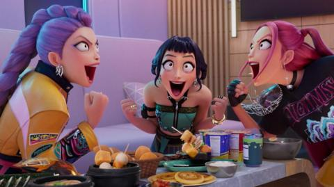

Netflix Confirms Global Concert Tour For Oscar-Winning 'KPop Demon Hunters'

Netflix is turning its most-watched movie ever into a live concert experience. According to multiple sources familiar with the negotiations, the streaming giant is planning a global "KPop Demon Hunters" tour featuring live performances of the Oscar-winning film's chart-topping songs by the fictional K-pop group HUNTR/X.
The news, first reported by Bloomberg and confirmed by Reuters, comes just days after the animated film won the Academy Award for Best Animated Feature—only the latest in a string of historic achievements for the Korean-produced phenomenon.
From Screen to Stage
According to sources, Netflix has been negotiating with major concert promoters to stage live shows featuring performances of songs from the film's record-breaking soundtrack. The tour would represent Netflix's most ambitious foray into live entertainment—and an entirely new model for monetizing animated content.
"Netflix is seeking to capitalize on the popularity of the film and its chart-topping songs by negotiating with concert promoters to stage a live show featuring performances of the songs," Bloomberg reported.
The tour would likely feature the voice actresses behind HUNTR/X—Rei Ami, EJAE, and Audrey Nuna—performing the film's songs live. All three artists have established musical careers independent of the film, making live performances a natural extension.
The KPop Demon Hunters Phenomenon
For those unfamiliar with the cultural juggernaut: "KPop Demon Hunters" follows a fictional K-pop girl group—HUNTR/X—who discover their agency has been using demonic contracts to ensure their success. When they reject the deal, they gain supernatural powers and must battle both literal demons and the dark side of the entertainment industry.
The film has shattered records since its release:
- Most-watched Netflix movie ever with over 300 million views
- Academy Award for Best Animated Feature (2026)
- Academy Award for Best Original Song ("Golden")
- Grammy nominations for multiple soundtrack songs
- Soundtrack spent 12 weeks at #1 on Billboard 200
The film's success has been attributed to its sharp satire of K-pop industry practices, stunning animation, and genuinely catchy songs—a rare combination that appealed to both K-pop fans and general audiences.
Potential Hologram Technology
One particularly intriguing detail: sources suggest Netflix is exploring hologram technology to bring the animated HUNTR/X characters to life alongside their voice actresses.
"They're looking at everything from simple projections to full holographic displays," one insider noted. "The technology has advanced significantly, and a HUNTR/X concert with holograms would be unlike anything audiences have seen."
The hologram approach would follow in the footsteps of virtual concerts featuring virtual K-pop groups like aespa's AI counterparts and PLAVE, but at an unprecedented scale and budget.
The Oscar Performance
Fans got a taste of what a live HUNTR/X performance might look like at the 98th Academy Awards, where Rei Ami, EJAE, and Audrey Nuna performed "Golden" live. The performance received a standing ovation and immediately sparked calls for a concert tour.
The trio's chemistry onstage demonstrated that HUNTR/X's appeal extends beyond animation—these are genuine artists who can deliver compelling live performances.
Building the K-Pop Cinematic Universe
The tour plans come as Netflix prepares a sequel to "KPop Demon Hunters," expected to release in late 2026 or early 2027. A successful concert tour would serve multiple purposes:
- Generate direct revenue from ticket sales and merchandise
- Maintain audience engagement between films
- Establish HUNTR/X as a "real" K-pop act in fans' minds
- Create content opportunities (concert film, behind-the-scenes documentary)
Industry analysts note that Netflix's approach mirrors successful franchises like Disney's "Frozen" and "Hamilton," which extended theatrical experiences into broader entertainment ecosystems.
Fan Reactions
Social media has erupted with excitement since Bloomberg broke the news:
"A HUNTR/X concert? I'm already saving for tickets to a show that doesn't exist yet."
"The fact that a fictional K-pop group from an animated movie might tour before some actual groups is peak 2026."
"Please let this happen. I need to scream 'GOLDEN' with thousands of other fans."
What We Know So Far
While many details remain unconfirmed, here's what sources have indicated:
- Timeline: Tour likely to launch in late 2026, possibly timed with sequel release
- Venues: Major arenas in North America, Asia, and Europe being discussed
- Format: Combination of live performances and visual spectacle (projections/holograms)
- Performers: Rei Ami, EJAE, and Audrey Nuna expected to headline
Netflix has not officially commented on the tour plans, though the company has acknowledged exploring "expanded entertainment experiences" based on successful original content.
For now, HUNTR/X fans can only wait—and stream "Golden" on repeat while imagining hearing it live.
"KPop Demon Hunters" is streaming now on Netflix.